class: center, middle # EE-464 STATIC POWER CONVERSION-II # PFC & DC/AC Converters (Inverters) ## Ozan Keysan ## [keysan.me](http://keysan.me) ### Office: C-113 <span class="meta">•</span> Tel: 210 7586 --- # PFC? -- ## Power Factor Correction -- ## Power Factor of a 1Ph Diode Rectifier? -- <img src="./images/ee464/pfc_diode_rectifier.png" alt="Drawing" style="width: 600px;"> --- ## Diode Rectifier ### Source current <img src="./images/ee464/pfc_diode_waveform.png" alt="Drawing" style="width: 700px;"> --- # PFC required for many applications -- - ### Computer Power Supplies, LED Drives -- - ### Arc Furnaces -- - ### Welding <img src="http://www.gedikwelding.com/wp-content/uploads/2016/10/PoWerPlus-TIG-200-DC-PFC-Product.jpg" alt="Drawing" style="width: 300px;"> --- # PFC Circuit -- <img src="./images/ee464/pfc.png" alt="Drawing" style="width: 700px;"> --- # PFC Current -- <img src="./images/ee464/pfc_current.png" alt="Drawing" style="width: 500px;"> --- # PFC Current ## Critical Current Mode (Discontinuous Current Mode) -- <img src="./images/ee464/pfc_crm.png" alt="Drawing" style="width: 600px;"> --- # PFC Effect -- <img src="https://toshiba.semicon-storage.com/content/dam/toshiba-ss/std/product/linear/powersupply/pfc/__icsFiles/artimage/2013/01/15/cprmafd0000/a3.gif" alt="Drawing" style="width: 800px;"> --- ## Commercial PFC Controllers -- - ### [Toshiba-TB6819AFG](https://toshiba.semicon-storage.com/tr/product/linear/power-supply/pfc-ic/pfc-crm-ic.html) - ### [OnSemi PFC Controllers](http://www.onsemi.com/PowerSolutions/parametrics.do?id=981) - ### [TI PFC Controllers](http://www.ti.com/power-management/offline-isolated-dcdc-controllers-converters/factor-correction/products.html#p1694=Single-phase%20PFC&p1131=CCM) - ### [TI UCC28180](http://www.ti.com/product/UCC28180/datasheet/abstract#SLUSBQ56054) --- ## PFC Application Study: Welding Circuit -- <img src="https://www.fairchildsemi.com/Assets/-Blockdiagram-Widgets/images/Welding-Induction-Heating-Welding-Machine-01.jpg" alt="Drawing" style="width: 800px;"> --- # DC/AC Converters -- # Inverters <img src="https://rudgeenergy.co.uk/wp-content/uploads/2017/08/Solar-pv-inverters-Rudge-Energy.jpg" alt="Drawing" style="width: 600px;"> --- # Block Diagram ### AC Motor drive with unidirectional power flow -- 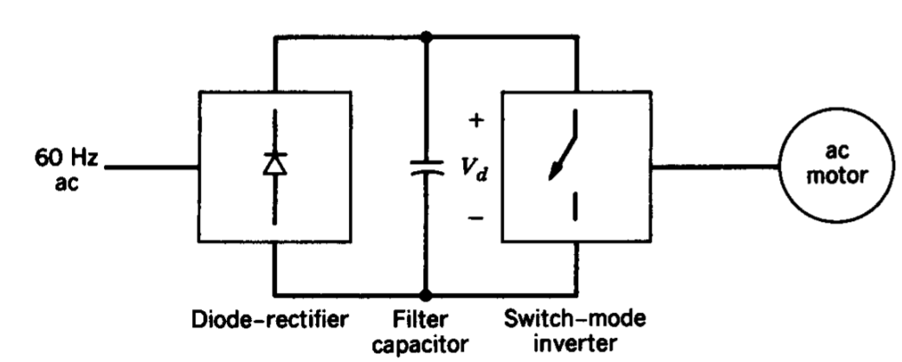 --- # Block Diagram ### AC Motor drive with bidirectional power flow -- 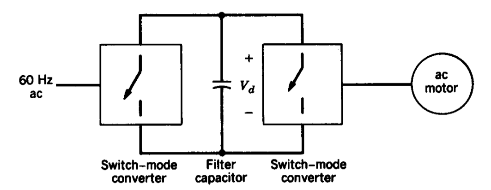 --- # Operating Quadrants 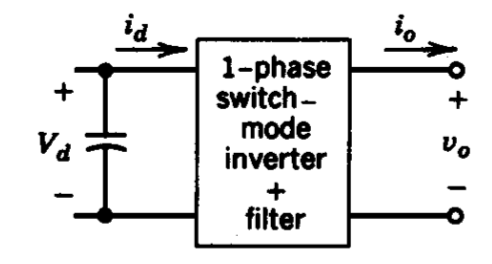 --- # Operating Quadrants 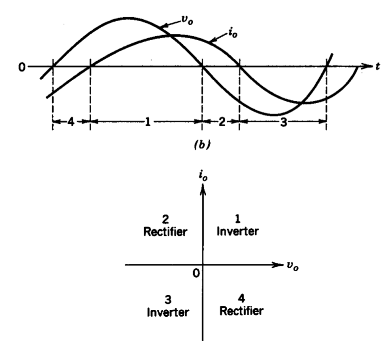 ??? ### sunum notlari \\(x^2\\) --- # One Leg Inverter -- 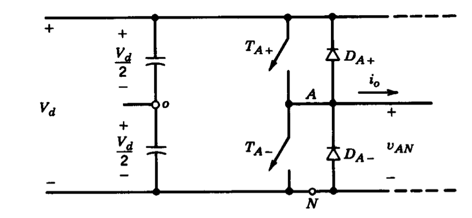 ### Building block for almost all inverter types --- # PWM Generation -- ## Sinusoidal PWM (SPWM) -- - ## The most common type -- - ## Many other PWM Techniques (wait 2 weeks) --- # Sinusiodal PWM -- ### Compare a sinusoidal wave with a carrier triangular wave -- 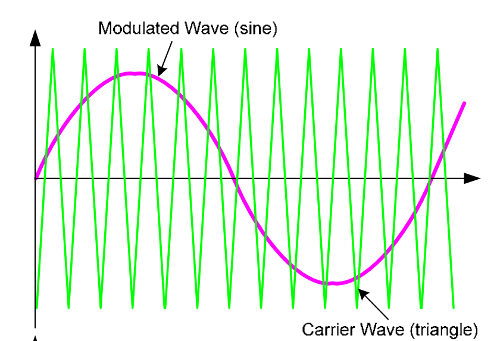 --- # Sinusiodal PWM -- 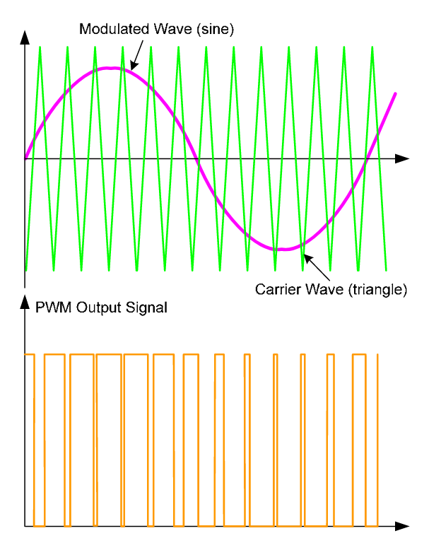 --- # Sinusiodal PWM -- 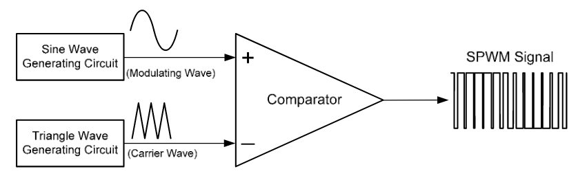 ### Analog generation of svpwm --- # PWM in one leg inverter -- 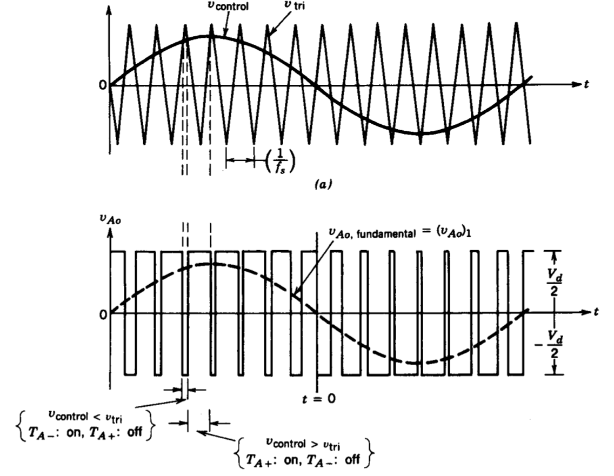 --- # Some Definitions -- ## Frequency Modulation Ratio -- ## \\(m_f = \dfrac{f_s}{f_1}\\) ## \\(f_s\\): Switching frequency ## \\(f_1\\): Fundamental frequency of AC output --- # What is \\(m_f\\) for this case? --- ## \\(m_f\\) selection -- ## Preferred to have a high value (\\(m_f>21\\)) - ### i.e 2 kHz for 50 Hz: \\(m_f=40\\) -- - ### May not be possible for larger power applications -- - ### Be aware of [audible noise](http://onlinetonegenerator.com/) (not only fs, but also its harmonics) -- - ### Asynchronous PWM can be used but not preferred --- ## Synchronous PWM ### \\(f_s\\) is an integer multiple of \\(f_1\\) -- - ### \\(m_f\\) is integer -- - ### If not (asynchronous PWM), subharmonics of \\(f_1\\) is generated --- ## \\(m_f\\) selection -- ## Small Frequency Modulation (\\(m_f<21\\)) - ### Synchronous PWM should be used -- - ### \\(m_f\\) should be an odd integer --- # Some Definitions -- ## Modulation Index -- ## (Amplitude Modulation Ratio) -- ## \\(m\_a=\dfrac{\hat{V}\_{control}}{\hat{V}\_{triangle}}\\) -- ## Linear region: \\(m_a<1\\) -- ## Overmodulation: \\(m_a>1\\) --- # Linear Region -- ### Fundamental voltage magnitude varies linearly with \\(m_a\\) -- ### \\(\hat{V}\_{ao1}= m\_a \dfrac{V\_d}{2}\\) -- ### \\(V\_{ao}= \dfrac{v\_{control}}{\hat{V}\_{triangle}} \dfrac{V\_d}{2}\\) -- ### Other harmonics does NOT change linearly with \\(\hat{V}\_{ao1}\\) --- # PWM Harmonics -- ## FFT in linear region -- 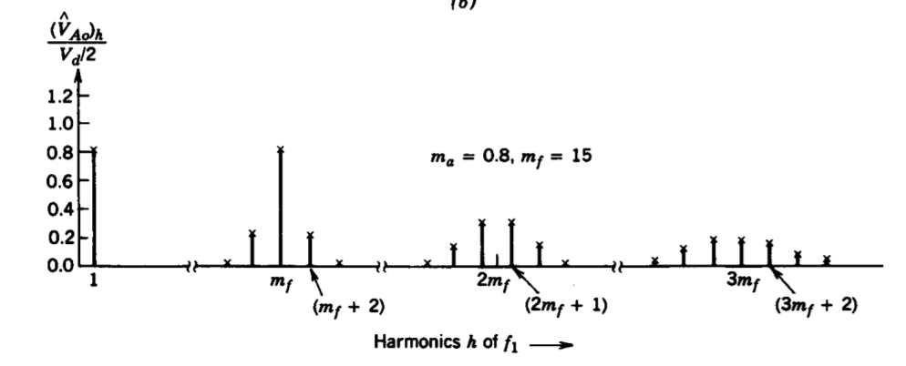 ## Notice the sidebands --- # [PWM Harmonics](https://www.google.com.tr/search?ei=fVW5Wpm9G6Lg6ATYtquYCg&q=plot+0.8*sin%28x%29%2B0.22*sin%2837*x%29%2B0.818*sin%2839*x%29%2B0.22*sin%2841*x%29%2B0.314*sin%2877*x%29%2B0.314*sin%2879*x%29%2B0.139*sin%2881*x%29%2B0.139*sin%2875*x%29%2B0.013*sin%2883*x%29%2B0.013*sin%2873*x%29%2B0.171*sin%28117*x%29%2B0.176*sin%28119*x%29%2B0.176*sin%28115*x%29%2B0.104*sin%28121*x%29%2B0.104*sin%28113*x%29%2B0.105*sin%28155*x%29%2B0.105*sin%28157*x%29%2B0.115*sin%28153*x%29%2B0.115*sin%28159*x%29%2B0.016*sin%28143*x%29%2B0.016*sin%28131*x%29&oq=plot+0.8*sin%28x%29%2B0.22*sin%2837*x%29%2B0.818*sin%2839*x%29%2B0.22*sin%2841*x%29%2B0.314*sin%2877*x%29%2B0.314*sin%2879*x%29%2B0.139*sin%2881*x%29%2B0.139*sin%2875*x%29%2B0.013*sin%2883*x%29%2B0.013*sin%2873*x%29%2B0.171*sin%28117*x%29%2B0.176*sin%28119*x%29%2B0.176*sin%28115*x%29%2B0.104*sin%28121*x%29%2B0.104*sin%28113*x%29%2B0.105*sin%28155*x%29%2B0.105*sin%28157*x%29%2B0.115*sin%28153*x%29%2B0.115*sin%28159*x%29%2B0.016*sin%28143*x%29%2B0.016*sin%28131*x%29&gs_l=psy-ab.3...48885.70566.0.71020.15.15.0.0.0.0.0.0..0.0....0...1c.1.64.psy-ab..15.0.0....0.-PE9gd4ffFo) -- 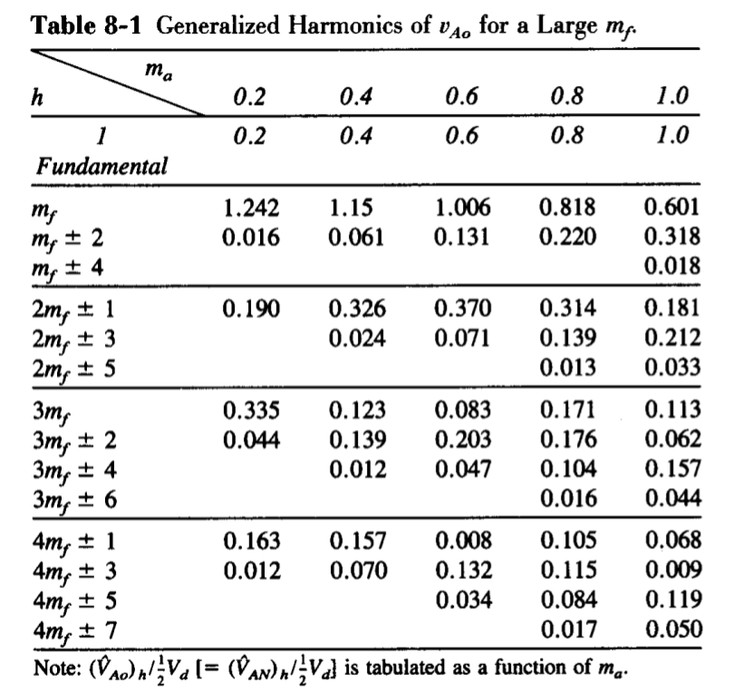 --- # PWM Harmonics ## Advantageous to choose \\(m_f\\) as odd integer: -- - ### Results in odd symmetry (\\(f(-t)=-f(t)\\)) -- - ### Results in half-wave symmetry (\\(f(t)=-f(t+T/2)\\)) -- - ### No even harmonics are present -- - ### Only sine components exist (no cosine harmonics component) --- ## Overmodulation in SPWM -- ### Control signals gets bigger than the triangle waveform 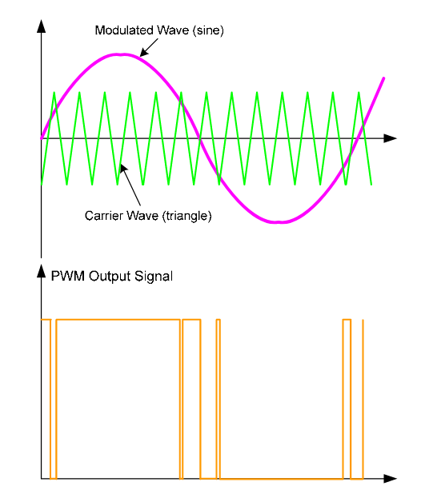 --- ## Overmodulation in SPWM ### Possible to create higher magnitude, but induce harmonics of \\(f_1\\) -- 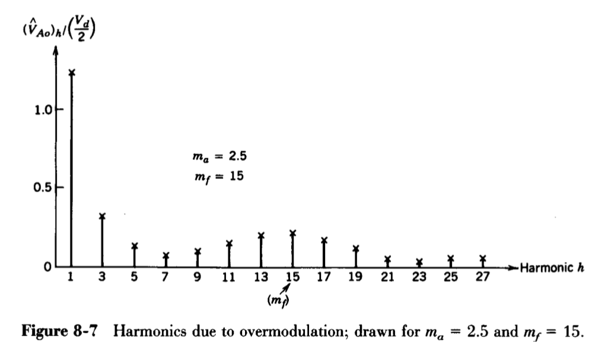 --- ## Over-modulation in SPWM ## Worst Case?: -- Square Wave 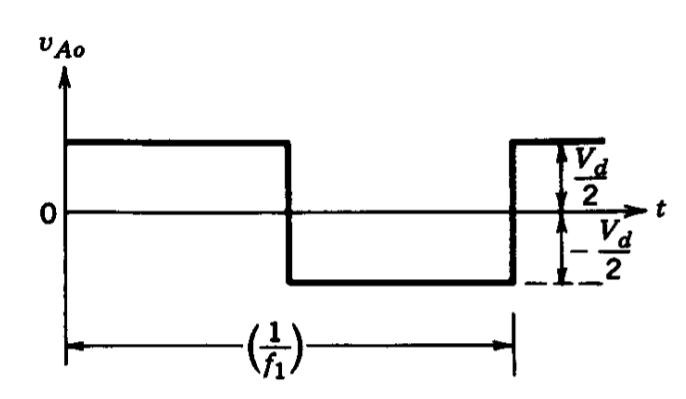 --- ## Over-modulation in SPWM ## Square Wave Harmonics 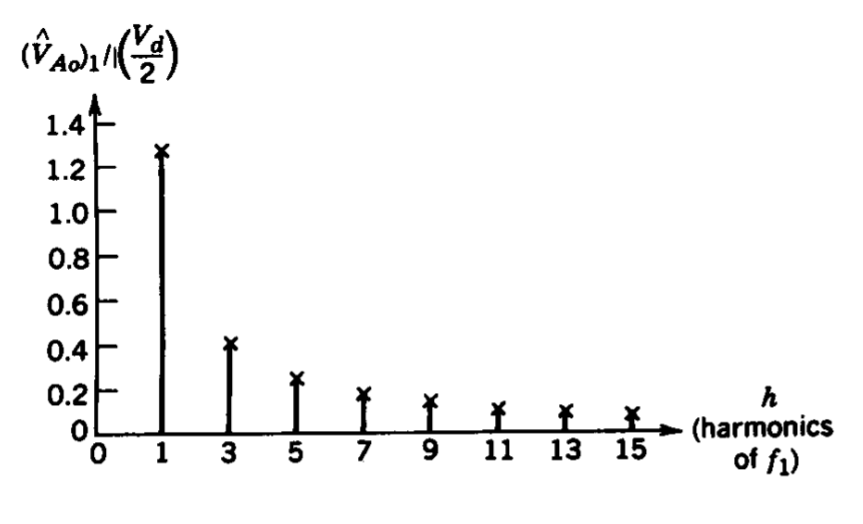 --- ## Over-modulation in SPWM ## Square Wave Peak Voltage? -- ### \\(\hat{V}\_{ao1}= \dfrac{4}{\pi} \dfrac{V\_d}{2} = 1.273 \dfrac{V\_d}{2}\\) -- ## Fundamental harmonics: ### \\(\hat{V}\_{aoh}= \dfrac{\hat{V}\_{ao1}}{h}\\) --- # Over-modulation Index Variation 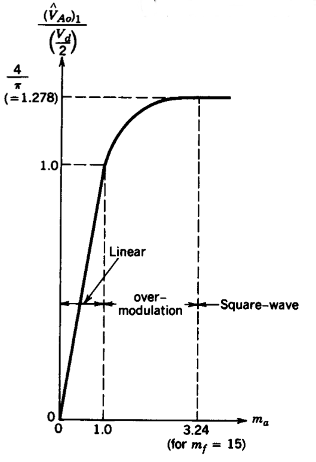 --- # Single-Phase Half-Bridge Inverter ### In order to have equal capacitor voltage, io cannot have a DC component --- # Single-Phase Full-Bridge Inverter 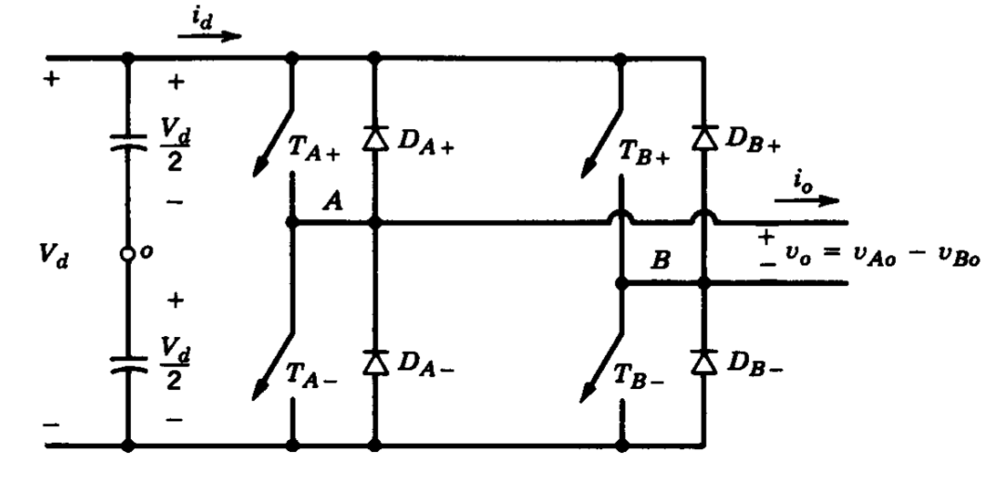 ### Voltage level is twice of the half bridge inverter --- # Bipolar PWM ## Same with the full-bridge DC/DC converter -- ### \\(T\_{A+}\\) and \\(T\_{B-}\\) are turn on and off together -- ### \\(T\_{A-}\\) and \\(T\_{B+}\\) are complimetary of \\(T\_{A+}\\) and \\(T\_{B-}\\) -- ## Can give \\(V\_d\\) or \\(-V\_d\\) --- # Bi-polar Voltage Switching <img src="./images/ee464/bipolar1.png" alt="Drawing" style="width: 600px;"> --- # Bi-polar Voltage Switching <img src="./images/ee464/bipolar2.png" alt="Drawing" style="width: 700px;"> --- # Bi-polar PWM 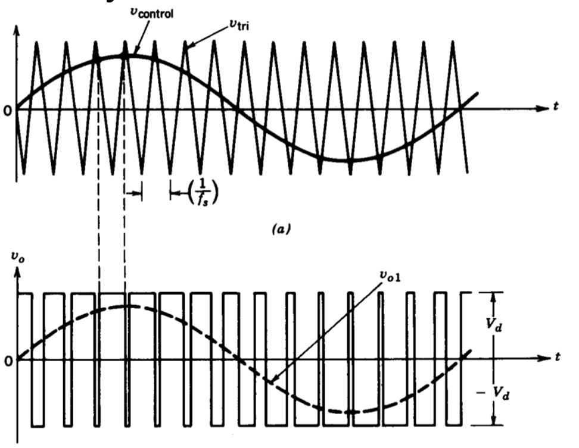 --- # Bi-polar PWM ### Voltage level is twice of the half bridge inverter -- ## Linear Region ### \\(\hat{V}\_{o1}= m\_a V\_d\\) -- ## Overmodulation ### \\(V\_d < \hat{V}\_{o1} < \dfrac{4}{\pi} V\_d\\) --- # Bi-polar PWM ## Harmonics -- ## Same harmonics (as there is just offset in the waveform) --- # Source Side Current -- 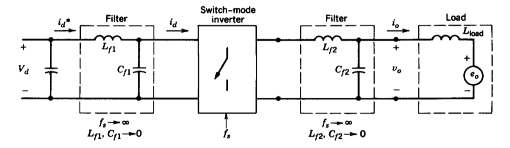 --- # Source Side Current ## Has DC and AC (with \\(2f_1\\)) component. -- 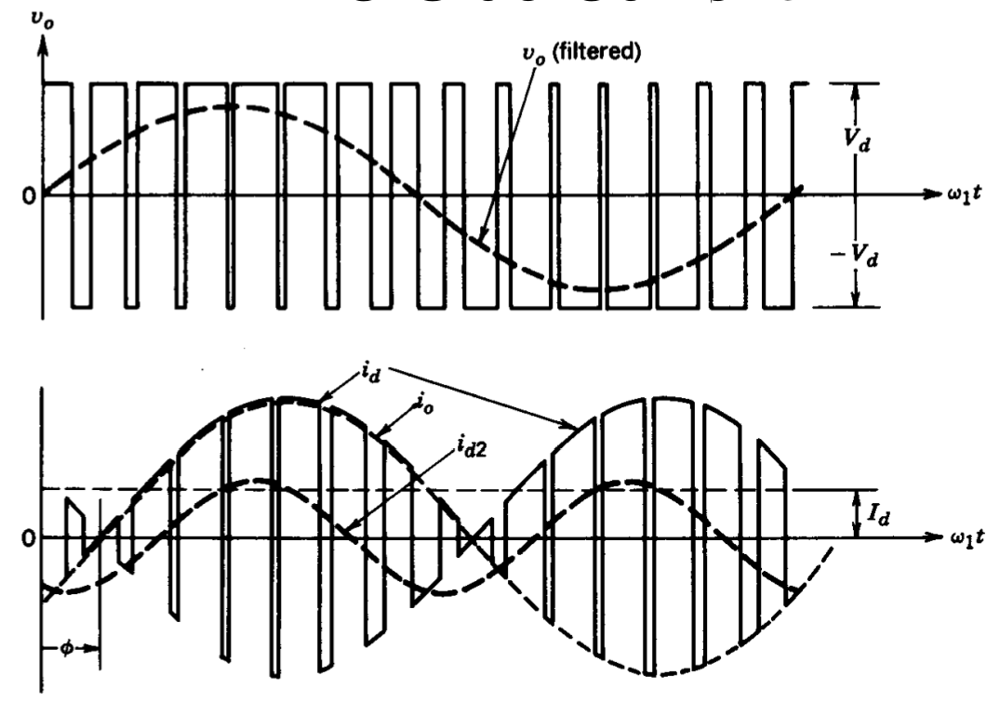 --- # Unipolar PWM ## Same with the full-bridge DC/DC converter ### \\(T\_{A+}\\) and \\(T\_{B+}\\) are controlled seperately ### \\(T\_{A-}\\) and \\(T\_{B-}\\) are complimetary of \\(T\_{A+}\\) and \\(T\_{B+}\\) -- ## Can give \\(V\_d\\), \\(0\\), \\(-V\_d\\) ## \\(V\_o = 0 \\) if \\(T\_{A+}\\) and \\(T\_{B+}\\) are ON ## \\(V\_o = 0 \\) if \\(T\_{A-}\\) and \\(T\_{B-}\\) are ON --- # Uni-polar Voltage Switching <img src="./images/ee464/unipolar1.png" alt="Drawing" style="width: 700px;"> --- # Uni-polar Voltage Switching <img src="./images/ee464/unipolar2.png" alt="Drawing" style="width: 700px;"> --- # Uni-polar PWM Sine Output -- <img src="./images/ee464/unipolar_sine.png" alt="Drawing" style="width: 600px;"> --- # Uni-polar PWM Sine Output -- 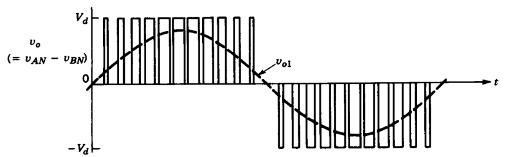 --- # Uni-polar PWM Harmonics -- ## Harmonics of twice the switching frequency. -- 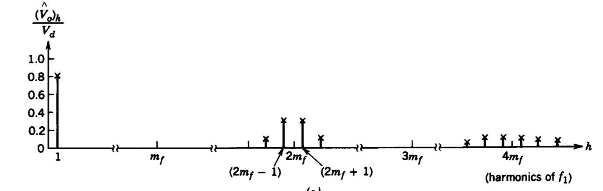 --- ## Harmonics Comparison -- ### Bipolar PWM 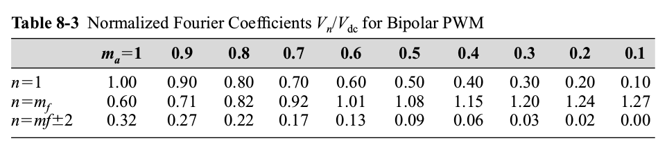 -- ### Unipolar PWM 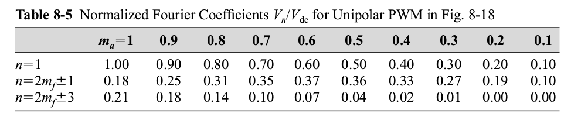 --- # Unipolar DC Side Current 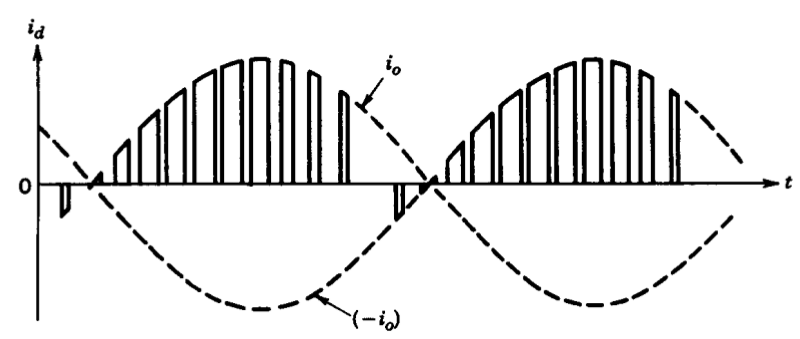 --- ## Sinusoidal Generation by Voltage Shift -- ### Generate Square wave with controllable off periods --- ## Sinusoidal Generation by Voltage Shift -- ### Generate Square wave with controllable off periods ### Van and Vbn has overlapping regions 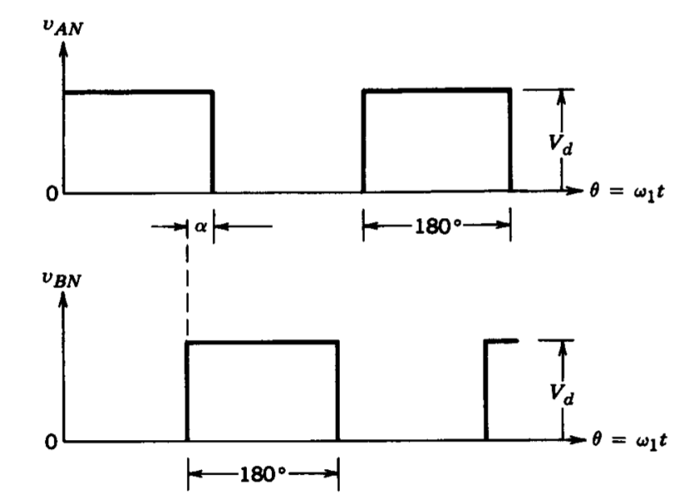 --- ## Sinusoidal Generation by Voltage Shift -- ### Generate Square wave with controllable off periods ### Van and Vbn has overlapping regions 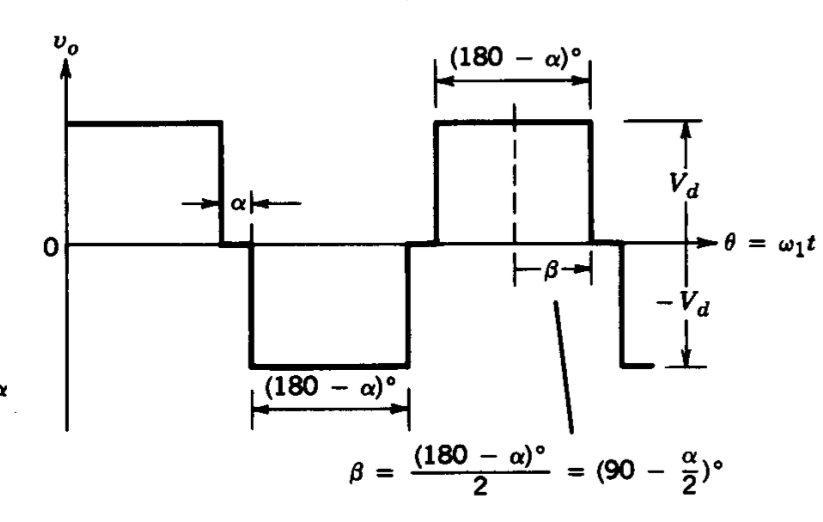 --- ## Sinusoidal Generation by Voltage Shift ### What about harmonics? -- 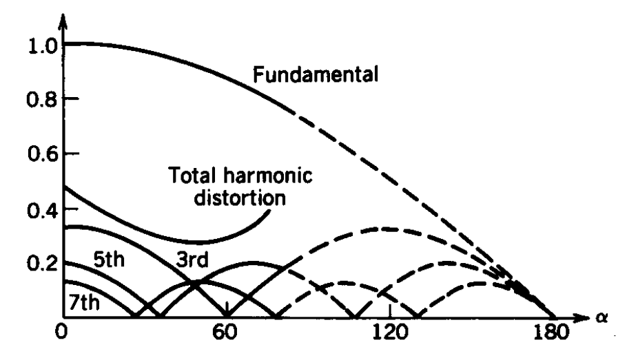 -- ### For curious students: SHE: -- [Selective Harmonic Elimination](https://pdfs.semanticscholar.org/7f9a/8313ba8b0988e9e6657cf1e4d21878e0abe2.pdf) --- # Example: -- ## Example 8.8 (Daniel W. Hart-Power Electronics) 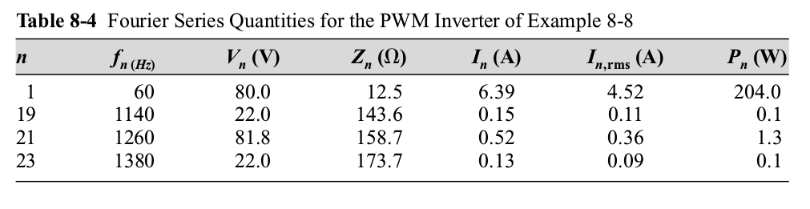 --- ## You can download this presentation from: [keysan.me/ee464](http://keysan.me/ee464)